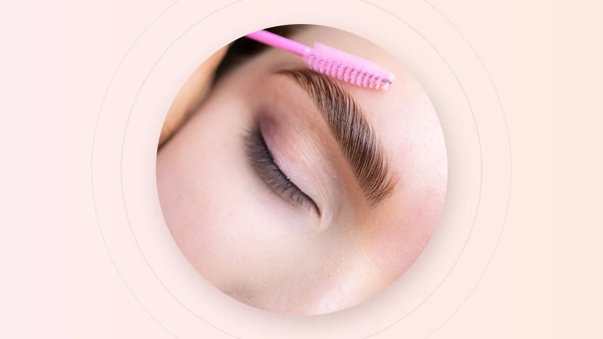

The short answer
Pick a mist or shadow style if you want a soft, filled-in "makeup" brow, especially if your skin is oily. Pick hair strokes if you want brows that look like natural hairs up close. Our brow menu runs from Mist Brow at S$198 (trial price S$88) to Private Custom Fortune Brow at S$999 (trial price S$698). Expect brows to look darker for the first few days, to heal over about four to six weeks, and to last around one to three years depending on your skin.
There's a particular kind of freedom in waking up with your brows already done. No pencil, no powder, no redrawing them after a sweaty walk home. That's the promise of eyebrow embroidery, and it's why it has become one of the most popular beauty services in Singapore.
But walk up to a brow menu and the names can feel like a secret code: mist, fairy mist, shadow, hair stroke, wild. This guide decodes them, so you can choose the brow that suits your face, your skin and the way you live.
What Eyebrow Embroidery Is
Eyebrow embroidery is a semi-permanent cosmetic treatment. Pigment is placed into the upper layers of the skin to create the shape, colour and density you've agreed with your artist. Unlike a tattoo, it's designed to fade gradually over time, so your brows can evolve as trends, and your face, change.
The styles differ in how the pigment is placed. Some build soft, powdery shading. Others draw fine lines that mimic individual hairs. Many premium styles combine techniques and colours for a more customised result.
The Styles, Explained
Mist Brow
A soft, powdery finish in a single colour. The classic starting point if you want brows that look gently filled in with powder.
Fairy Mist Brow
A mist finish built with two imported colours, for a softer gradient and more dimension than a single shade.
Luxury Makeup Brow
Three imported colours for a fuller, polished brow, closer to the look of freshly applied brow makeup.
3D Shadow Brow
Four imported colours layered for depth and shadow, giving a defined, dimensional brow.
3D Hair Stroke Brow
Fine, hair-like strokes with exclusive customisation, designed to look like natural brow hairs up close.
Natural Wild Brow
A premium, customised style. As the name suggests, it's for those who want a fuller, natural-looking brow. Ask to see healed examples.
Luxury Ink Brow
A premium, customised brow. Ask your artist how it differs from the other premium styles and which suits your face.
Private Custom Fortune Brow
The top of the menu, with fully private, premium customisation from shape to colour.
Prices at a Glance
| Style | Colours or customisation | Price | Trial price |
|---|---|---|---|
| Mist Brow | Normal single colour | S$198 | S$88 |
| Fairy Mist Brow | Imported two colours | S$298 | S$188 |
| Luxury Makeup Brow | Imported three colours | S$498 | S$288 |
| 3D Shadow Brow | Imported four colours | S$598 | S$388 |
| 3D Hair Stroke Brow | Exclusive customisation | S$698 | S$468 |
| Natural Wild Brow | Premium customisation | S$798 | S$488 |
| Luxury Ink Brow | Premium customisation | S$888 | S$568 |
| Private Custom Fortune Brow | Premium customisation | S$999 | S$698 |
Our general beauty menu also lists Eyebrow Embroidery from S$98++. Ask the outlet which option matches the look you want, and whether the trial price applies to your booking. See the full eyebrow price list.
How to Choose Your Style
Start with the look you love
Do you reach for brow powder or pomade, and like a soft, polished finish? A mist, makeup or shadow style will feel familiar. Do you prefer barely-there brows that look like your own hair? Hair strokes are made for you.
Then consider your skin
| Your skin | What often works well | Why |
|---|---|---|
| Oily or combination | Mist, makeup and shadow styles | Oil can make fine strokes soften and blur over time, while shading stays even |
| Normal or dry | Hair strokes or any shaded style | Fine lines tend to stay crisper on less oily skin |
| Very sparse brows | Shaded or layered styles | Shading adds fill where there's little natural hair |
| Fairly full brows with gaps | Hair strokes | Strokes blend in with your existing hairs |
The humidity bonus: in Singapore's heat, drawn-on brows are often the first thing to slide off by lunchtime. Embroidered brows stay put through sweat, rain and swimming, which is a big part of their appeal here.
Finally, think about upkeep
All embroidery fades gradually. Sun exposure, oily skin and exfoliating skincare near the brows speed that up. If you want your brows to stay crisp, plan for occasional touch-ups. Your artist will advise whether and when you need one.
What Happens at the Appointment
- Consultation. Your artist asks about the look you want, your skin, your skincare and any health considerations.
- Shape mapping. The brow shape is drawn onto your face and adjusted until you're happy. Nothing permanent happens until you approve it.
- Colour matching. Pigments are chosen to suit your hair colour and skin tone.
- The embroidery. Pigment is placed using the technique for your chosen style.
- Aftercare briefing. You'll go home with instructions tailored to your treatment, and advice on when to check in about a touch-up.
The Healing Timeline
Knowing what to expect stops a lot of unnecessary worry. Healing varies from person to person, but it commonly looks like this:
| When | What you might notice |
|---|---|
| Days 1 to 3 | Brows look darker, bolder and sharper than the final result, sometimes with mild redness. This is normal. |
| Days 4 to 10 | Light flaking and itching as the skin heals. Don't pick or scratch. |
| Weeks 2 to 3 | Colour can look patchy or faded as new skin forms over it. It usually reappears. |
| Weeks 4 to 6 | Colour settles into its final tone. Your artist may suggest a touch-up. |
Planning around an event? Book your brows at least four to six weeks before a wedding or photoshoot, so they're fully healed and settled on the day. Our facial timing guide includes a full pre-event beauty planner.
Aftercare Do's and Don'ts
Always follow the instructions your artist gives you, as they're tailored to your treatment. In general:
- Do keep the brows clean and follow your artist's cleansing and ointment instructions.
- Do let flakes fall off on their own.
- Do protect your brows from strong sun once healed, since UV fades pigment.
- Don't pick, scratch or rub the area while it heals.
- Don't apply makeup to the brows until your artist says it's okay.
- Don't swim, use saunas or steam rooms, or work up a heavy sweat during early healing.
- Don't use exfoliating acids or retinoids near the brows while they heal.
Talk to Your Artist First If...
Mention any of these at consultation. Your artist may suggest waiting or adjusting the plan:
- You're pregnant or breastfeeding
- You have irritation, a rash, cuts or an active skin condition around the brows
- You've recently had cosmetic injections or facial treatments near the area
- You take blood-thinning medication, or you scar or heal slowly
- You have a big event in the next few weeks
The best brows aren't the most dramatic ones. They're the ones people compliment without being able to say exactly what changed.
Correction and Removal
Older embroidery sometimes fades to unwanted red, orange or blue-grey tones, or the shape simply no longer suits you. Two services on our menu help:
Brow Colour Correction
Neutralises and refreshes the colour of existing brow work.
Eyebrow Removal
For brow work you'd like to fade out. Trial price S$388 for five sessions.
Thinking about eyeliner too? Our eyeliner menu runs from Eyelash Line at S$198 (trial S$88) to High End Private Customisation at S$888 (trial S$688). For everyday grooming between treatments, Eyebrow Trimming is S$10.
Frequently Asked Questions
Does eyebrow embroidery hurt?
Most people describe it as mild discomfort, like light scratching, rather than pain. Sensitivity varies from person to person, so let your artist know if you're anxious and they'll talk you through each step.
How long does eyebrow embroidery last?
Usually around one to three years. Oily skin, sun exposure and exfoliating skincare tend to fade pigment faster, and a touch-up can keep brows looking fresh.
Which looks more natural: mist brow or hair strokes?
Up close, hair strokes look most like natural brow hairs. Mist styles look like softly filled-in brows, similar to wearing brow powder. On oily skin, a mist or shadow style often wears more evenly over time.
Why do my brows look so dark right after the treatment?
That's completely normal. Freshly embroidered brows look darker and sharper for the first few days, then soften as the skin heals over the following weeks.
What is the trial price?
Each style lists a regular price and a lower trial price, for example Mist Brow at S$198 with a trial price of S$88. Ask the outlet whether the trial price applies to your booking.
Final Thoughts
The right brow depends on the look you love, your skin type and how much upkeep you're happy with. Start with a consultation, approve the shape before anything permanent happens, and give your brows the full healing window before judging the result.